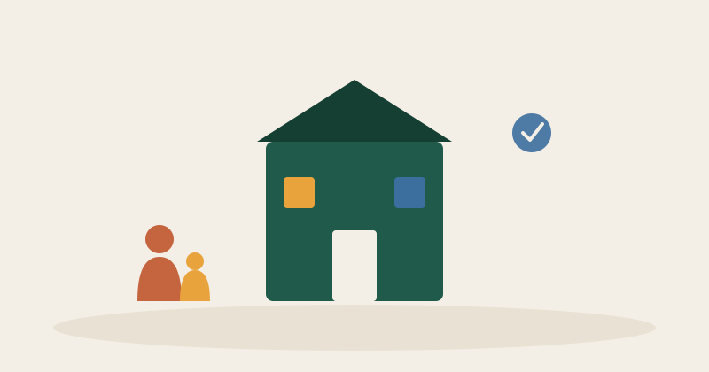

Una vez decidís pedir una valoración, surge la siguiente duda: ¿qué centro elegir? No todos funcionan igual, y encontrar uno con el que la familia se sienta cómoda es tan importante como la propia intervención. Aquí van los puntos que conviene tener en cuenta.
Quién forma el equipo
Un buen centro de atención temprana suele contar con un equipo multidisciplinar: psicología, logopedia, fisioterapia y terapia ocupacional, coordinados entre sí. Preguntad quién llevará el caso de vuestro hijo o hija y si hay una persona de referencia con la que hablar habitualmente, en lugar de ir cambiando de profesional cada pocas semanas.
Cómo trabajan con la familia
La atención temprana no se limita a las sesiones dentro del centro: lo que se trabaja debería trasladarse también a casa, con pautas claras y realistas para el día a día. Un buen indicador es si el centro os explica qué se está trabajando y por qué, y si os involucra activamente en el proceso, en lugar de dejaros fuera de las decisiones.
Cercanía y logística
La atención temprana suele implicar sesiones semanales, a veces varias por semana. La distancia y los horarios disponibles son un factor práctico que pesa mucho en el día a día: un centro excelente pero inasumible en el tiempo puede acabar siendo peor opción que uno bueno y sostenible en el tiempo.
Público o privado/concertado
Según la comunidad autónoma, existen centros públicos (gratuitos, a veces con listas de espera) y centros privados o concertados (con distinto copago según ingresos). Informaos en los servicios sociales de vuestra zona sobre las plazas públicas disponibles antes de descartar esa opción por desconocimiento.
Confiad también en cómo os sentís
Más allá de la parte técnica, es válido tener en cuenta cómo os sentís tratados en las primeras visitas: si os escuchan, si resuelven vuestras dudas con calma y si el niño o niña parece a gusto. Ese vínculo de confianza también forma parte de que el proceso funcione.
¿Gestionáis un centro o servicio de atención temprana? Ayudamos a explicar vuestro enfoque de trabajo de forma clara, para que las familias sepan qué esperar desde el primer contacto.
Hablar con Todos Cuentan